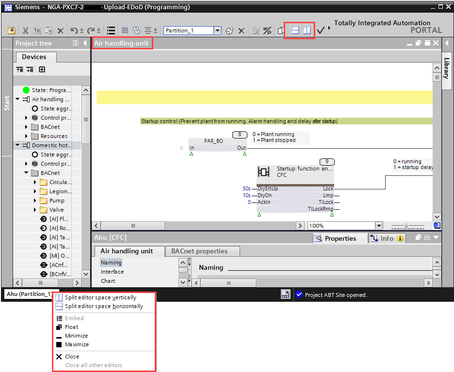
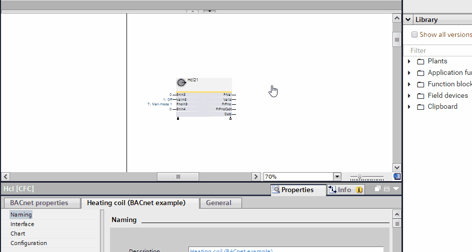
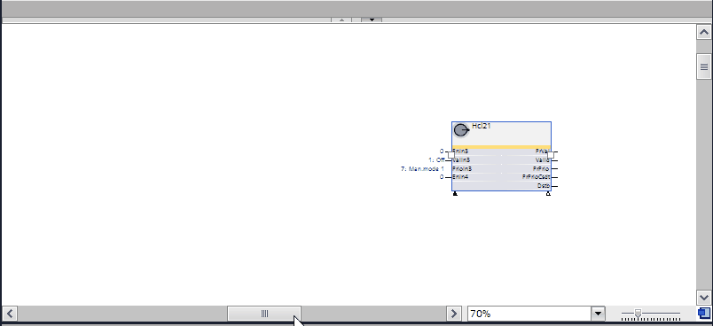
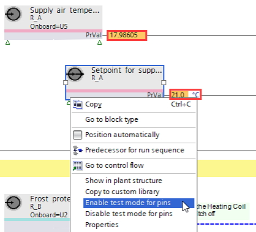

Working with the Programming editor
In the Programming editor you program your plant.
Adjust the size of the Programming editor
- Click the Split editor space horizontally icon in the toolbar of the Programming editor to display two individual editors aligned horizontally.
- Click the Split editor space vertically icon in the toolbar to display two individual editors aligned vertically.
- Double-click the header of the Programming editor to maximize it. Double-click the header again to return the Programming editor to its original size.
- Right-click an open chart at the bottom of the Programming editor and select an entry.

Zoom in a chart
- In the Programming editor, click and hold the Bird-Eye icon.
- An overview of the entire program is shown. The current section is marked.
- Scroll to explore the entire program.
- Let the mouse button go on the desired chart to open it.

Add a subchart
- In the Programming editor, right-click in an empty space and select Insert new subchart.
- A new subchart is added to the chart.
Add a text box to the chart
- In the Programming editor, right-click in an empty space and select Insert new text box.
- A new text box is added to the chart. You can write text into the text box.

You can change the properties of the text box, e.g., text color, border width, in the Properties tab.
Add a programming sheet
- In the Programming editor, drag a block across the sheet border.
- A new sheet is added to the chart.

Add one or more programming sheets
- Open the Properties tab.
- Click Interface and enter the number of sheets in the Vertical sheets and Horizontal sheets fields.
- (Optional) Select the size of the sheets in the Sheet size field.
- The number of sheets you entered are added to the chart.
Connect blocks
- In the Programming editor, do one of the following:
- Drag the output pin of a block to the input pin of the target block.
- Double-click the output pin of a block, and then click the input pin of the target block.
- Press the Ctrl+C keys on the output pin of a block, then select the pin of the target block and press the Ctrl+V keys.
- The block connects to the target block.
If you hover over the input pins of a target block, the input pins with matching data type are highlighted in green.
Delete an element
- Right-click an element in the Project tree and select Delete.
- The element is deleted from the Project tree.
Note:The element is not deleted in the Programming editor.
Follow the data flow on one sheet
- In the Programming editor, click or hover over a line that connects two blocks.
- The line is highlighted in blue.
- Handles for adjusting connections on the line are shown.
Follow the data flow across multiple sheets
- In the Programming editor, double-click a connector on the side of a sheet.
- The connected block or pin is shown.
Enable/disable test mode for pins

- In Programming editor, right-click a block.
- In the context menu of the block, select
- Enable test mode for pins to activate the pins for test.
- Live values are displayed.
- Disable test mode for pins to deactivate the pins for test.
When enabling or disabling test mode for pins, this selection affects all visible pins of a block.